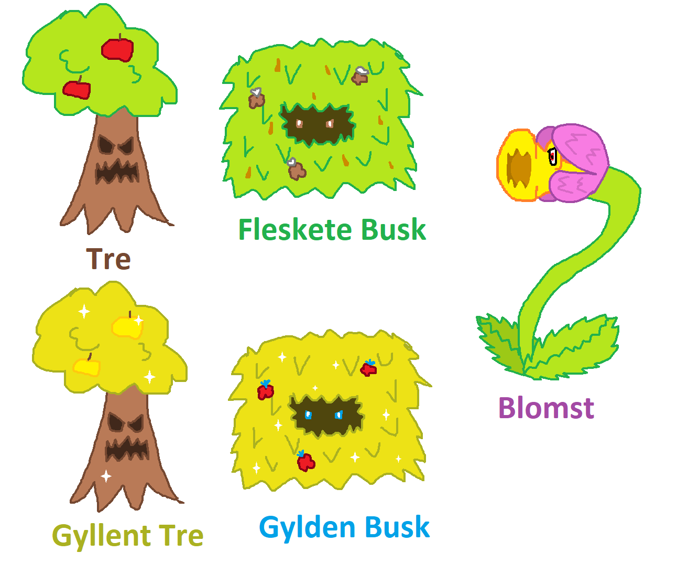

Text RPG er et lite RPG lignende spill hvor du kan velge dine egne utstyr og veier. Det finnes fem ulike fiender du kan bekjempe; et Tre, et Gyllent Tre en Gylden Busk, en Fleskete Busk og en Blomst
| Fiende Stats | Liv | Damage | Mat | XP |
|---|---|---|---|---|
| Tre/Gyllent Tre | 6 | Normalt: 3 HARDT: 5 Svakt: 2 | Et Eple Går opp med 2 liv | Tre 5 Gyllent Tre 25 |
| Fleskete Busk/ Gylden Busk | 5 | Normalt: 1 HARDT: 2 Svakt: 0 | Et Bær Går opp med 2 liv | Fleskete Busk 0 Gylden Busk 25 |
| Blomst | 7 | Normalt: 3 (skal være 4) HARDT: 4 (skal være 6) Svakt: 2 | En Bie Går opp med 2 liv | Bra ending 30 Nøytral ending 25 (Soppelandsbyen 50) |

Uoffisielle illustrasjoner av anonym leser